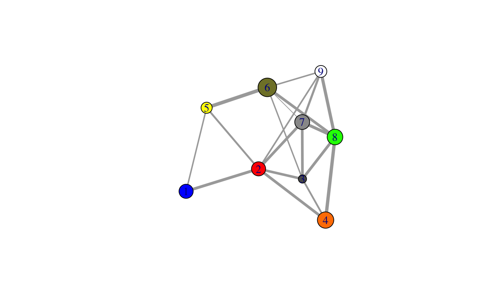
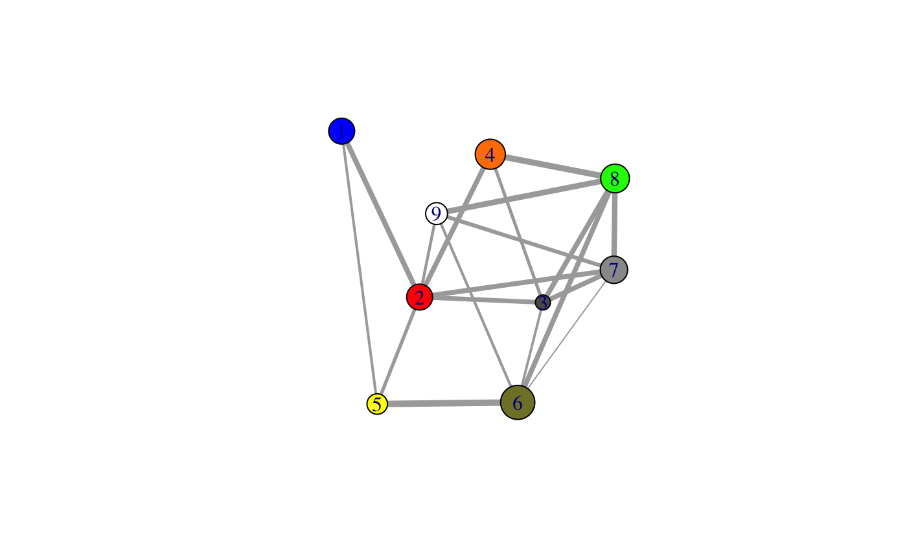
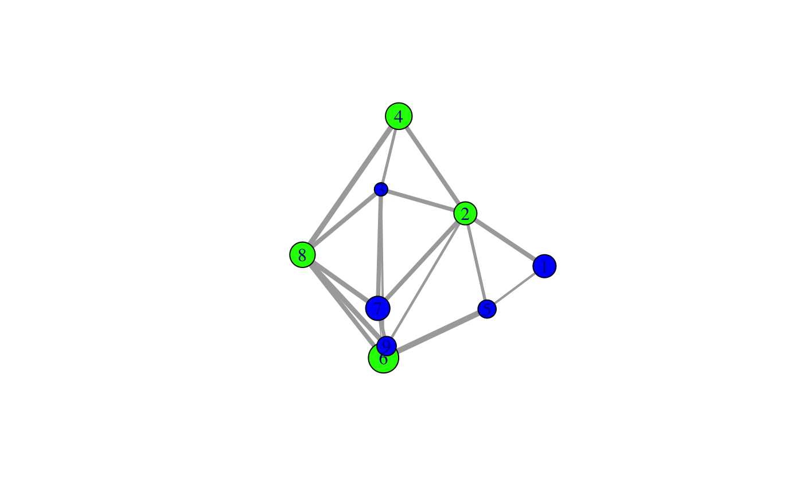
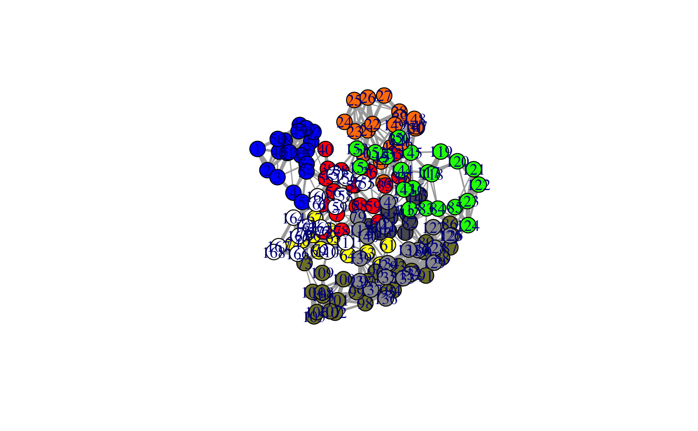
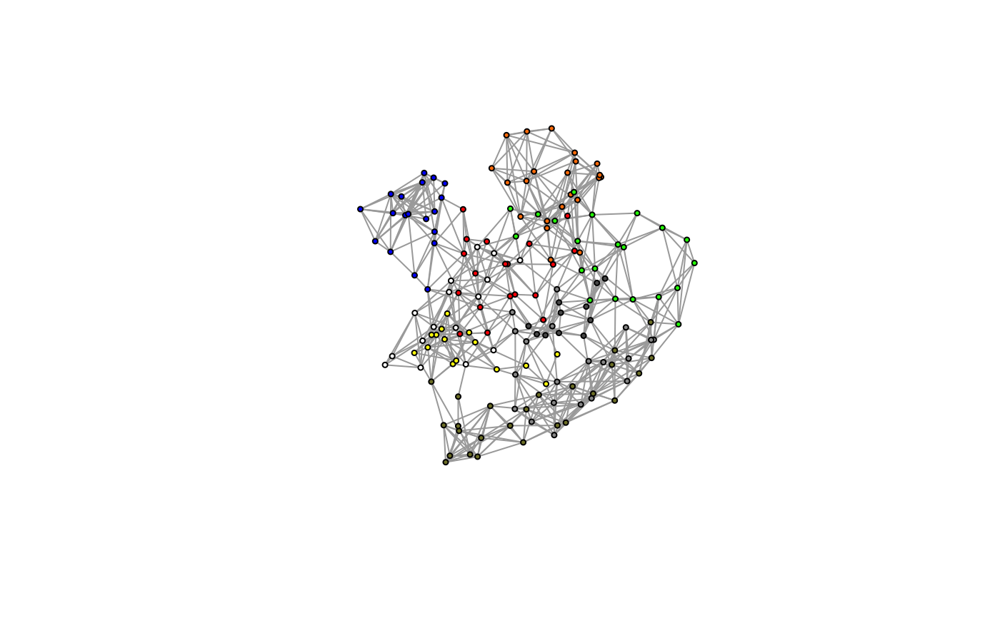

plot.cna.RdPlot a protein dynamic network as obtained from the cna function.
# S3 method for cna plot(x, pdb = NULL, weights=NULL, vertex.size=NULL, layout=NULL, col=NULL, full=FALSE, scale=TRUE, color.edge = FALSE, interactive=FALSE, ...) # S3 method for ecna plot(x, ...)
| x | A protein network graph object (or a list of such objects) as obtained from the ‘cna’ function. |
|---|---|
| pdb | A PDB structure object obtained from ‘read.pdb’. If supplied this will be used to guide the network plot ‘layout’, see ‘layout.cna’ for details. |
| weights | A numeric vector containing the edge weights for the network. |
| vertex.size | A numeric vector of node/community sizes. If NULL the size will be taken from the input network graph object ‘x’. Typically for ‘full=TRUE’ nodes will be of an equal size and for ‘full=FALSE’ community node size will be proportional to the residue membership of each community. |
| layout | Either a function or a numeric matrix. It specifies how the vertices will be placed on the plot. See ‘layout.cna’. |
| col | A vector of colors used for node/vertex rendering. If NULL these values are taken from the input network ‘V(x$community.network)$color’. |
| full | Logical, if TRUE the full all-atom network rather than the clustered community network will be plotted. |
| scale | Logical, if TRUE weights are scaled with respect to the network. |
| color.edge | Logical, if TRUE edges are colored with respect to their weights. |
| interactive | Logical, if TRUE interactive graph will be drawn where users can manually adjust the network (positions of vertices, colors of edges, etc.). Needs Tcl/Tk support in the installed R build. |
| ... | Additional graphical parameters for ‘plot.igraph’. |
This function calls ‘plot.igraph’ from the igraph package to plot cna networks the way we like them.
The plot layout is user settable, we like the options of: ‘layout.cna’, ‘layout.fruchterman.reingold’, ‘layout.mds’ or ‘layout.svd’. Note that first of these uses PDB structure information to produce a more meaningful layout.
Extensive plot modifications are possible by setting additional graphical parameters (...). These options are detailed in ‘igraph.plotting’. Common parameters to alter include:
Node labels, V(x$network)$name. Use NA to omit.
Node label colors, see also vertex.label.cex etc.
Edge colors, E(x$network)$color.
Community highlighting, a community list object, see also mark.col etc.
Produces a network plot on the active graphics device. Also returns the plot layout coordinates silently, which can be passed to the ‘identify.cna’ function.
Grant, B.J. et al. (2006) Bioinformatics 22, 2695--2696.
Barry Grant and Guido Scarabelli
Be sure to check the correspondence of your ‘pdb’ object with your network object ‘x’, as few internal checks are currently performed by the ‘layout.cna’ function.
plot.igraph,
plot.communities,
igraph.plotting
# \donttest{ # PDB server connection required - testing excluded if (!requireNamespace("igraph", quietly = TRUE)) { message('Need igraph installed to run this example') } else { ##-- Build a CNA object pdb <- read.pdb("4Q21") modes <- nma(pdb) cij <- dccm(modes) net <- cna(cij, cutoff.cij=0.2) # Plot coarse grain network based on dynamically coupled communities xy <- plot.cna(net) #plot.dccm(cij, margin.segments=net$communities$membership) # Chose a different PDB informed layout for plot plot.cna(net, pdb) # Play with plot layout and colors... plot.cna(net, layout=igraph::layout.mds(net$community.network), col=c("blue","green") ) # Plot full residue network colored by communities - will be slow due to number of edges!! plot.cna(net, pdb, full=TRUE) # Alter plot settings plot.cna(net, pdb, full=TRUE, vertex.size=3, weights=1, vertex.label=NA) }#> Note: Accessing on-line PDB file#> Warning: /var/folders/xf/qznxnpf91vb1wm4xwgnbt0xr0000gn/T//RtmpVENcGx/4Q21.pdb exists. Skipping download#> Building Hessian... Done in 0.019 seconds. #> Diagonalizing Hessian... Done in 0.163 seconds. #> | |==================================================== | 74% | |==================================================== | 75% | |===================================================== | 75% | |===================================================== | 76% | |====================================================== | 77% | |====================================================== | 78% | |======================================================= | 78% | |======================================================= | 79% | |======================================================== | 79% | |======================================================== | 80% | |======================================================== | 81% | |========================================================= | 81% | |========================================================= | 82% | |========================================================== | 82% | |========================================================== | 83% | |=========================================================== | 84% | |=========================================================== | 85% | |============================================================ | 85% | |============================================================ | 86% | |============================================================= | 86% | |============================================================= | 87% | |============================================================= | 88% | |============================================================== | 88% | |============================================================== | 89% | |=============================================================== | 89% | |=============================================================== | 90% | |=============================================================== | 91% | |================================================================ | 91% | |================================================================ | 92% | |================================================================= | 92% | |================================================================= | 93% | |================================================================= | 94% | |================================================================== | 94% | |================================================================== | 95% | |=================================================================== | 95% | |=================================================================== | 96% | |==================================================================== | 97% | |==================================================================== | 98% | |===================================================================== | 98% | |===================================================================== | 99% | |======================================================================| 99% | |======================================================================| 100%#> Warning: At community.c:460 :Membership vector will be selected based on the lowest modularity score.#> Warning: At community.c:467 :Modularity calculation with weighted edge betweenness community detection might not make sense -- modularity treats edge weights as similarities while edge betwenness treats them as distances#> Obtaining estimated layout with fruchterman.reingold#> Obtaining layout from PDB structure#> Obtaining layout from PDB structure#> Obtaining layout from PDB structure# }